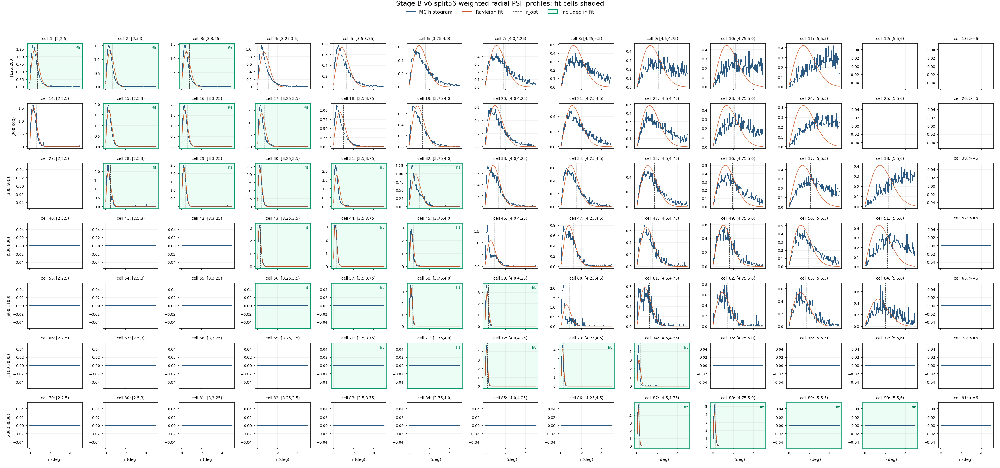

This report reruns the v6 _64670 baselinev4 apply chain with the final physical predE bin split from [5,6) into [5,5.5) and [5.5,6). Nhit bins are unchanged, >=6 remains in the candidate cache, and fit-cell selection is frozen by (nhit_bin,predE_bin) mapping rather than old cell ids.
Split56 shape check passed. 91 candidate cells, 27 fit cells, 7 Nhit points, and 12 predE points.
Split-child gate exception. The right split child is retained because the old baselinev4 [2000,3000) x [5,6) fit cell is contractually split into two fit cells. Cell-level selector fields record the default count gate and the explicit split-child effective gate.
Cell
Nhit
predE
MC count
Default gate
Effective gate
ridge fraction
Exception
89
[2000,3000)
[5,5.5)
6916
1000
500
1
0
90
[2000,3000)
[5.5,6)
876
1000
500
0.1267
1
Executive Result
candidate cells
91
7 Nhit x 13 predE
fit cells
27
baselinev4 plus split high-energy cell
Stage C files
3,969
entry mismatches 0
Selected rows
79,958,631
configured-cell rows after cuts
Stage E signal
68.829 sigma
N_on 376,410; B_on 3.357461e+05
Preferred Stage F
LOGPAR
chi2/ndof 355.1/24
Stage G points
7/12
Nhit / predE
LogPar
n/a
alpha n/a, beta n/a
Gate
Status
Evidence
candidate / fit cells
pass
91 candidates; 27 fit cells
split child fit cells
warning
2 children included; count-gate exceptions 1
Stage A nominal response
pass
primary_thrown_response; available
Stage B PSF
warning
91 cells; warning cells 59, fit subset 9
Stage A aperture response
pass
primary_thrown_aperture_conditioned_response; PSF path is split56
Stage C observation
pass
3969 files; 79,958,631 selected rows; rough live time 125.654 d
Stage D background
warning
24 warning cells; 0 in fit subset
Stage E signal
pass
formal sigma 68.829
Stage F fit
pass
preferred logpar
Stage G SED
pass
7 Nhit points; 12 predE points
Paths And Provenance
Main-flow paths are split56-specific and preserve the v6 _64670 model/cache provenance. The only v4 path in this report is the explicit diagnostic comparison reference.
Nominal Stage A is primary_thrown_response; the final fit uses primary_thrown_aperture_conditioned_response. Stage B wrote 91 PSF rows. Pale green panels mark the 27 split56 fit cells in the radial PSF grid.
Stage B split56 r_opt by candidate cellStage B split56 effective events by candidate cellStage B split56 radial PSF profiles

Stage B split56 radial PSF profiles; green panels enter the fit
Stage C-D-E Diagnostics
Stage C selected 79,958,631 configured-cell rows. Stage D produced the annulus-normalized quadratic ROI-local background with 24 warning cells, including 0 in the fit subset. Stage E passed the total-sigma gate.
Metric
Value
Stage C processed files
3,969
Stage C rough live time
125.654 d
Stage D warning cells
24 / 91
Stage D warning cells in fit subset
0 / 27
Stage E total N_on
376,410
Stage E total B_on
3.357461e+05
Stage E total excess
40663.9
Stage E formal sigma
68.8288
Stage D ROI excess gridStage D annulus residual diagnosticsStage E formal sigma gridStage E on/background grid
Stage F Fit
Stage F uses the split56 aperture-conditioned response, split56 containment-1 signal, and the split56 baselinev4 selector. The fit is diagnostic unless the remaining cell-level residuals are accepted by a later review.
Fit
Valid
chi2/ndof
p
phi0
gamma/alpha
beta
PL conservative
True
515.7/25
4.236e-93
n/a
n/a
n/a
LogPar conservative
True
355.1/24
1.136e-60
n/a
n/a
n/a
PL sqrt-N
True
911.7/25
2.970e-176
n/a
n/a
n/a
LogPar sqrt-N
True
602.5/24
6.944e-112
n/a
n/a
n/a
Cell
Bin
Excess
Err
LogPar model
Pull
1
[125,200)[2,2.5)
-804.2
360
3005
-10.6
2
[125,200)[2.5,3)
8565
452
8235
0.73
3
[125,200)[3,3.25)
1430
219
1316
0.522
15
[200,300)[2.5,3)
7434
216
6121
6.07
16
[200,300)[3,3.25)
3897
148
2630
8.56
17
[200,300)[3.25,3.5)
1126
119
816.2
2.59
28
[300,500)[2.5,3)
1651
93.3
2231
-6.22
29
[300,500)[3,3.25)
4044
110
3897
1.33
30
[300,500)[3.25,3.5)
2519
90.1
2379
1.55
31
[300,500)[3.5,3.75)
707.1
63.3
661.6
0.719
32
[300,500)[3.75,4.0)
270.7
69.8
197.9
1.04
43
[500,800)[3.25,3.5)
1750
60.3
1999
-4.13
44
[500,800)[3.5,3.75)
1328
51.5
1479
-2.93
45
[500,800)[3.75,4.0)
414.7
30.9
411
0.12
56
[800,1100)[3.25,3.5)
286.5
55.3
267.1
0.351
57
[800,1100)[3.5,3.75)
815.1
108
791.6
0.219
58
[800,1100)[3.75,4.0)
446.6
28
516.7
-2.51
59
[800,1100)[4.0,4.25)
163
17.7
126.2
2.08
70
[1100,2000)[3.5,3.75)
90.58
29.1
132.2
-1.43
71
[1100,2000)[3.75,4.0)
363.4
68
402.7
-0.578
72
[1100,2000)[4.0,4.25)
307.5
20.7
298.5
0.436
73
[1100,2000)[4.25,4.5)
151.4
15
97.74
3.58
74
[1100,2000)[4.5,4.75)
72.83
10.9
17.1
5.11
87
[2000,3000)[4.5,4.75)
12.06
4.68
11.85
0.044
88
[2000,3000)[4.75,5.0)
8.946
6.25
5.718
0.517
89
[2000,3000)[5,5.5)
-17.65
42
1.073
-0.445
90
[2000,3000)[5.5,6)
14.15
8.82
0.009389
1.6
Stage F model counts versus observed excessStage F LogPar pull gridStage F theta exposure
Stage G Diagnostic SED
Stage G freezes the preferred Stage F spectrum with phi0=2.5323e-12, alpha=2.689, beta=0.1431 at 3 TeV. Actual point counts are 7 Nhit and 12 predE.
Nhit group
Cells
E_eff TeV
E2 dN/dE
Err
chi2/ndof
StageF ratio
Full-array PL ratio
[125,200)
1;2;3
0.5654
4.0389e-11
2.309e-12
101/2
0.836
0.671
[200,300)
15;16;17
0.8602
5.5777e-11
1.264e-12
16.52/2
1.29
1.24
[300,500)
28;29;30;31;32
1.351
3.5371e-11
7.031e-13
43.49/4
0.981
1.07
[500,800)
43;44;45
2.675
2.2045e-11
5.371e-13
2.727/2
0.895
1.07
[800,1100)
56;57;58;59
4.251
1.6558e-11
8.125e-13
9.118/3
0.94
1.11
[1100,2000)
70;71;72;73;74
8.14
1.0825e-11
5.654e-13
38.98/4
1.09
1.13
[2000,3000)
87;88;89;90
45.41
1.3146e-12
4.527e-13
2.99/3
1.08
0.451
PredE group
Cells
E_eff TeV
E2 dN/dE
Err
chi2/ndof
StageF ratio
Single cell
[2,2.5)
1
0.3232
-1.3920e-11
6.231e-12
0/0
-0.268
True
[2.5,3)
2;15;28
0.6646
4.7521e-11
1.127e-12
75.3/2
1.02
False
[3,3.25)
3;16;29
1.224
4.2454e-11
9.429e-13
49.7/2
1.13
False
[3.25,3.5)
17;30;43;56
2.061
2.7744e-11
6.697e-13
23.18/3
0.959
False
[3.5,3.75)
31;44;57;70
3.413
1.9117e-11
6.550e-13
4.614/3
0.919
False
[3.75,4.0)
32;45;58;71
5.703
1.2686e-11
5.822e-13
4.086/3
0.919
False
[4.0,4.25)
59;72
9.795
8.9269e-12
5.130e-13
2.806/1
1.08
False
[4.25,4.5)
73
16.89
7.0000e-12
6.928e-13
3.5969e-30/0
1.55
True
[4.5,4.75)
74;87
30.9
4.0178e-12
7.048e-13
18.64/1
1.92
False
[4.75,5.0)
88
61.86
1.1943e-12
8.343e-13
0/0
1.56
True
[5,5.5)
89
102.4
-5.5252e-12
1.316e-11
0/0
-16.4
True
[5.5,6)
90
257.2
9.3828e-11
5.850e-11
4.0533e-32/0
1.51e+03
True
Stage G split56 SED overlayStage G split56 SED ratiosStage G split56 cell grouping counts
Diagnostic v4 Comparison
The v4 comparison is explicit reference-only; all main split56 paths above point to v6 split56 products.